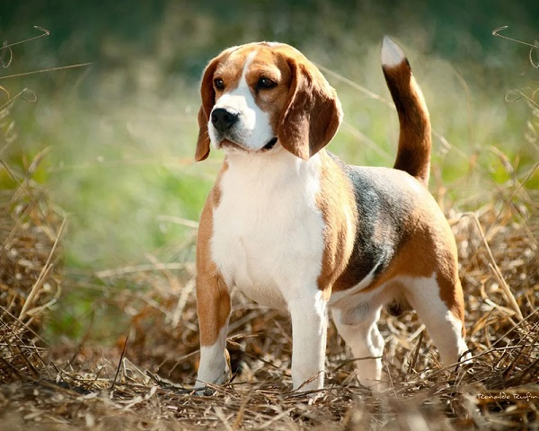

Друг человека
Собака — домашнее животное, одно из наиболее популярных (наряду с кошкой) животных-компаньонов. Первоначально домашняя собака была выделена в отдельный биологический вид Линнеем в 1758 году, в 1993 году реклассифицирована Смитсоновским институтом и Американской ассоциацией териологов в подвид волка. В русскоязычных письменных источниках слово «собака» в значении соответствующего животного встречается по крайней мере с 1475 года (начиная с грамоты князя Андрея Васильевича Меньшого Кириллову монастырю).С зоологической точки зрения, собака — плацентарное млекопитающее отряда хищных семейства псовых.
Собаки известны своими способностями к обучению, любовью к игре, социальным поведением. Выведены специальные породы собак, предназначенные для различных целей: охоты, охраны, тяги гужевого транспорта и другого, а также декоративные породы (например, болонка, пудель).
На сегодняшний день существует множество пород собак, которые значительно отличаются друг от друга и внешностью, и характером. Например, высота в холке может варьироваться от нескольких сантиметров (чихуахуа) до почти метра (ирландский волкодав, дог), цвет — от белого до чёрного, включая рыжий, серый, коричневый, в большом разнообразии оттенков.